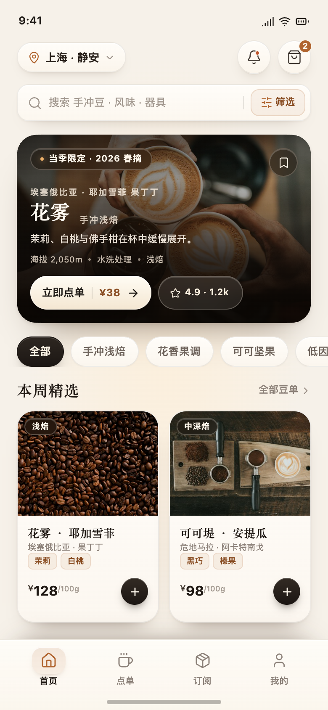

V1 旧架构 · 纯文本

V1-A · 专有 JSON 盲画基线
V2 新架构 · 纯文本
V2-A · 纯文本 HTML-First + 摄影 + Lucide + 自审

V1 旧架构 · 最佳方案

V1-D · 参考图 + 社区 Skill（旧蓝图）
V2 初稿 · 自审前

V2-B 初稿 · HTML-First + 摄影 + 图标
V2 终稿 · 视觉自审精修后

V2-B 终稿 · 截屏回喂自审后（已精修）